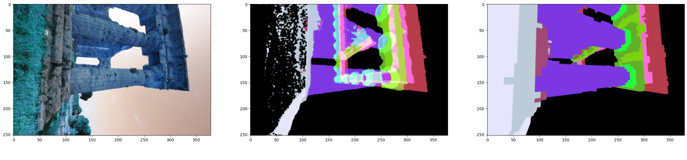

geomapi.utils.geometryutils
Geometryutils - a Python library for processing mesh and point cloud data.
- geomapi.utils.geometryutils.array_to_colors(array: array, colors: array = None) array
Map colors according to the unique values in the array.
- Args:
array (np.array(n,1)): array with scalars e.g. predictions.
colors (np.array(n,3)): e.g. np.array([[1,0,0],[0,1,0]]). colors are automatically mapped from [0,1].
- Returns:
np.array(n,3)
- geomapi.utils.geometryutils.array_subsample(array: ndarray, percentage: float = 0.1) ndarray
subsample rows of np.array
- Args:
array (np.ndarray): percentage (float, optional): downsampling percentage. Defaults to 0.1.
- Returns:
np.ndarray: output array
- geomapi.utils.geometryutils.arrays_to_mesh(tuple) open3d.geometry.TriangleMesh
Returns TriangleMesh from arrays.
- Args:
tuple (Tuple):
vertexArray:np.array
triangleArray:np.array
(optional) colorArray:np.array
(optional) normalArray:np.array
- Returns:
o3d.geometry.PointCloud
- geomapi.utils.geometryutils.box_to_mesh(box: open3d.geometry) open3d.geometry.TriangleMesh
Returns o3d.geometry.TriangleMesh of an OrientedBoundingBox or AxisAlignedBoundingBox.
- Args:
box (o3d.geometry.OrientedBoundingBox or AxisAlignedBoundingBox).
- Returns:
o3d.geometry.TriangleMesh
- geomapi.utils.geometryutils.color_by_intensity(pcd: open3d.geometry.PointCloud, intensities: array) open3d.geometry.PointCloud
Colorize a o3d.geometry.PointCloud with a numpy array of intesities. The intensties are assumed to have a maximum value of 65535.
- Args:
pcd (o3d.geometry.PointCloud): Point Cloud to colorize.
intensities (ndarray): (mx1) values [0-65535].
- Returns
o3d.geometry.PointCloud
- geomapi.utils.geometryutils.compute_nearest_neighbors(query_points: ndarray, reference_points: ndarray, query_normals: ndarray = None, reference_normals: ndarray = None, n: int = 5, distanceThreshold=None) Tuple[ndarray, ndarray]
Compute index and distance to nearest neighboring point in the reference dataset.
if the normals are given, it uses them to apply a normal filtering For the normal filtering, the n closest neighbors are considered of which the correspondence with the best matching normal is retained.
NOTE: The index of outliers is set to -1 if distanceTreshold is not None.
- Args:
query_points (np.array[n,3]): points to evaluate.
query_normals (np.array[n,3]): normals to evaluate.
reference_points (np.array[n,3]): reference points.
reference_normals (np.array[n,3]): reference normals.
n (int, optional): number of neighbors.
distanceTreshold (_type_, optional): Distance threshold for the nearest neighbors.. Defaults to None.
- Returns:
Tuple[np.array,np.array]: indices, distances
- geomapi.utils.geometryutils.compute_raycasting_collisions(geometries: List[open3d.geometry.Geometry], rays: array) Tuple[array, array]
Compute the collisions between a set of Open3D geometries and rays.

- Args:
1.geometries (List[o3d.geometry.Geometry]): A set of Point clouds or meshes.
2.rays (np.array[m,n,6]): Set of rays (1D or 2D) with 6 columns as the last dimension. A ray consists of a startpoint np.array[n,0:3] and a direction np.array[n,3:6]
- Returns:
Tuple[np.array,np.array]: distances (inf if not hit), geometry_ids (4294967295 if not hit)
- geomapi.utils.geometryutils.convert_to_homogeneous_3d_coordinates(input_data: list | ndarray) ndarray
Converts 3D Cartesian coordinates into homogeneous coordinates or normalizes existing homogeneous coordinates.
- Args:
- input_data (list or numpy.ndarray): The input data representing 3D coordinates.
Each row should have either 3 (Cartesian) or 4 (homogeneous) elements.
- Returns:
- numpy.ndarray: A 2D NumPy array where:
If input has 3 columns, a fourth column of ones is added.
If input has 4 columns, all elements are normalized by the last column.
Otherwise, a ValueError is raised.
- geomapi.utils.geometryutils.create_camera_frustum_mesh(transform, focal_length_35mm, depth=5.0)
Creates a 3D camera frustum mesh as a triangular pyramid using 35mm-equivalent focal length.
Parameters:
- transformnp.ndarray, shape (4, 4)
A 4x4 transformation matrix that places the camera frustum in world coordinates.
- focal_length_35mmfloat
Camera focal length in millimeters assuming a standard full-frame (36mm x 24mm) sensor. Used to compute the field of view of the frustum.
- depthfloat, optional (default=5.0)
The distance from the camera origin to the far image plane along the Z-axis.
Returns:
- mesho3d.geometry.TriangleMesh
A triangular mesh representing the camera frustum as a 3D pyramid.
Notes:
The frustum is constructed with its apex at the origin [0, 0, 0] and a rectangular base at the given depth.
The field of view is calculated from the sensor size and focal length.
The mesh includes triangular sides and a back face (the image plane), and is colored uniformly.
The result is useful for visualizing camera poses and orientations in 3D.
Example:
frustum_mesh = create_camera_frustum_mesh(np.eye(4), focal_length_35mm=50.0) o3d.visualization.draw_geometries([frustum_mesh])
- geomapi.utils.geometryutils.create_camera_frustum_mesh_with_image(transform, image_width, image_height, focal_length_35mm, depth=5.0, image_cv2=None)
Creates a 3D camera frustum as an Open3D LineSet, and optionally a textured image plane at the frustum’s far end.
Parameters:
- transformnp.ndarray, shape (4, 4)
A 4x4 transformation matrix representing the camera’s pose in world coordinates.
- image_widthint
Width of the image in pixels. Used to determine the aspect ratio of the camera’s sensor.
- image_heightint
Height of the image in pixels. Used to determine the aspect ratio of the camera’s sensor.
- focal_length_35mmfloat
Camera focal length in millimeters, assuming a 35mm-equivalent sensor width of 36mm. This is used to compute the field of view and shape of the frustum.
- depthfloat, optional (default=5.0)
Distance from the camera origin to the far/image plane along the Z-axis (i.e., frustum depth).
- image_cv2np.ndarray, optional
An OpenCV (NumPy) RGB or BGR image. If provided, a textured mesh is created at the far end of the frustum using the image dimensions for accurate aspect ratio.
Returns:
- line_seto3d.geometry.LineSet
A LineSet representing the frustum’s edges.
- image_mesho3d.geometry.TriangleMesh or None
A textured TriangleMesh showing the input image at the far end of the frustum. Returns None if image_cv2 is not provided.
Notes:
The frustum assumes a perspective camera with a virtual sensor width of 36mm.
The image plane is placed at depth units away from the camera origin along the local Z-axis.
This function is useful for visualizing camera poses and projected views in 3D scenes.
Example:
frustum, img_plane = create_camera_frustum_mesh(transform, w, h, 50.0, depth=5.0, image_cv2=cv2_img) o3d.visualization.draw_geometries([frustum, img_plane] if img_plane else [frustum])
- geomapi.utils.geometryutils.create_ellipsoid_mesh(radii: ndarray, transformation: ndarray, resolution: int = 30)
Create an Open3D TriangleMesh of an ellipsoid with a given set of radii and transformation matrix.
- Args:
radii: A numpy array [a,b,c] representing the radii of the ellipsoid along the primary, secondary and tertiary axes.
transformation: A 4x4 transformation matrix (numpy array) to apply to the ellipsoid mesh.
resolution: The resolution of the mesh (default 30).
- Returns
An Open3D TriangleMesh object representing the ellipsoid.
- geomapi.utils.geometryutils.create_identity_point_cloud(geometries: open3d.geometry.PointCloud, resolution: float = 0.1, getNormals=False) Tuple[open3d.geometry.PointCloud, array]
Returns a sampled point cloud colorized per object of a set of objects along with an array with an identifier for each point.
TODO: MB also store normals
- Args:
1.geometries (o3d.geometry.PointCloud or o3d.geometry.TriangleMesh)
2.resolution (float, optional): (down)sampling resolution for the point cloud. Defaults to 0.1.
- Raises:
ValueError: Geometries must be o3d.geometry (PointCloud or TriangleMesh)
- Returns:
Tuple[colorized point cloud (o3d.geometry.PointCloud), identityArray(np.array)] per geometry
- geomapi.utils.geometryutils.create_obb_from_orthophoto(cartesian_transform, image_width, image_height, gsd, depth)
Creates an oriented bounding box (OBB) for an orthographic image, with the origin at the center of the back face (z = 0) of the box.
- Parameters:
cartesian_transform (np.ndarray): 4x4 transformation matrix. image_width (int): Image width in pixels. image_height (int): Image height in pixels. gsd (float): Ground sampling distance (meters per pixel). depth (float): Depth (thickness) of the image in meters.
- Returns:
o3d.geometry.OrientedBoundingBox: The computed OBB.
- geomapi.utils.geometryutils.create_transform_from_pyramid_points(points, tol=1e-06)
Given 5 points of a pyramid (4 base + 1 tip, unordered), find the tip and compute a transform with: - origin at tip - forward toward base center - up aligned as closely as possible to world_up
- geomapi.utils.geometryutils.create_xyz_grid(bounds: List[float], resolutions: List[float]) ndarray
Generate a xyz grid. If only a single value is needed, set the boundaries equal e.g. xMin=xMax and the resolution to 1 e.g. dx=1.
- Args:
1.bounds (List[float]): [xMin,xMax,yMin,yMax,zMin,zMax]
2.resolutions (List[float]):[dx,dy,dz]
- Returns:
np.array(x,y,z)
- geomapi.utils.geometryutils.crop_dataframe_from_meshes(df: pandas.DataFrame, meshes: List[open3d.geometry.TriangleMesh]) List[pandas.DataFrame]
Crop point cloud and divide the inliers per waterthight mesh.
- Args:
dataFrame (pd.DataFrame): Pandas dataframe with first three columns as [X,Y,Z].
meshes (o3d.geometry.TriangleMesh): meshes to test the inliers.
- Returns:
List[o3d.geometry.PointCloud]
- geomapi.utils.geometryutils.crop_geometry_by_box(geometry: open3d.geometry, box: open3d.geometry.OrientedBoundingBox, subdivide: int = 0) open3d.geometry
Crop portion of a mesh/pointcloud that lies within an OrientedBoundingBox.

- Args:
geometry (o3d.geometry.TriangleMesh or o3d.geometry.PointCloud): Geometry to be cropped
box (o3d.geometry.OrientedBoundingBox): bouding cutter geometry
subdivide (int): number of interations to increase the density of the mesh (1=x4, 2=x16, etc.)
- Returns:
o3d.geometry.TriangleMesh or None
- geomapi.utils.geometryutils.crop_geometry_by_distance(source: open3d.geometry.Geometry, reference: List[open3d.geometry.Geometry], threshold: float = 0.1) open3d.geometry.PointCloud
Returns the portion of a pointcloud that lies within a range of another mesh/point cloud.

- Args:
source (o3d.geometry.TriangleMesh or o3d.geometry.PointCloud) : point cloud to filter
cutters (o3d.geometry.TriangleMesh or o3d.geometry.PointCloud): list of reference data
threshold (float, optional): threshold Euclidean distance for the filtering.Defaults to 0.1m.
- Returns:
o3d.geometry (TriangleMesh or PointCloud)
- geomapi.utils.geometryutils.crop_geometry_by_raycasting(source: open3d.geometry.TriangleMesh, cutter: open3d.geometry.TriangleMesh, inside: bool = True, strict: bool = True) open3d.geometry.TriangleMesh
Select portion of a mesh that lies within a mesh shape (if not closed, convexhull is called).
inside=True .. image:: ../../../docs/pics/crop_by_ray_casting1.PNG
inside=False .. image:: ../../../docs/pics/crop_by_ray_casting2.PNG
- Args:
source (o3d.geometry.TriangleMesh) : mesh to cut
cutter (o3d.geometry.TriangleMesh) : mesh that cuts
inside (bool): ‘True’ to retain inside. ‘False’ to retain outside
strict (bool): ‘True’ if no face vertex is allowed outside the bounds, ‘False’ allows 1 vertex to lie outside
- Returns:
outputmesh(o3d.geometry.TriangleMesh)
- geomapi.utils.geometryutils.crop_mesh_by_convex_hull(source: trimesh.Trimesh, cutters: List[trimesh.Trimesh], inside: bool = True) trimesh.Trimesh
Cut a portion of a mesh that lies within the convex hull of another mesh.
- Args:
source (trimesh.Trimesh): mesh that will be cut
cutter (trimesh.Trimesh): mesh of which the faces are used for the cuts. Face normals should point outwards (positive side)
strict (bool): True if source faces can only be part of a single submesh
inside (bool): True if retain the inside of the intersection
- Returns:
mesh (trimesh.Trimesh) or None
- geomapi.utils.geometryutils.crop_point_cloud_from_meshes(pcd: open3d.geometry.PointCloud, meshes: List[open3d.geometry.TriangleMesh]) List[open3d.geometry.PointCloud]
Crop point cloud and divide the inliers per waterthight mesh.
- Args:
pcd (o3d.geometry.PointCloud): point cloud to be cropped.
meshes (o3d.geometry.TriangleMesh). cutter objects.
- Returns:
List[o3d.geometry.PointCloud]
- geomapi.utils.geometryutils.dataframe_to_las(dataframe: pandas.DataFrame, xyz: List[int] = [0, 1, 2], rgb: List[int] = None, dtypes: List[str] = None) laspy.lasdata
Convert a dataframe representing a point cloud to a las point cloud file. View laspy dimension and type formatting at https://laspy.readthedocs.io/en/latest/lessbasic.html.
E.g.: las=dataframe_to_las(dataframe,rgb=[3,4,5])
- Args:
1.dataframe (pd.DataFrame): data frame with a number of columns such as xyz, rgb and some scalar fields (conform numpy) 2.xyz (List[int], optional): Indices of the xyz coordinates in the dataframe. Defaults to [0,1,2]. 3.rgb (List[int], optional): Indices of the color information in the dataframe e.g. [3,4,5]. Defaults to None. 4.dtypes (List[str], optional): types of the scalar fields that will be added e.g. [‘float32’,’uint8’]. Defaults to [float32] equal to the length of the scalar fields.
- Returns:
laspy.lasdata: output las file
- geomapi.utils.geometryutils.dataframe_to_pcd(df: pandas.DataFrame, xyz=[0, 1, 2], rgb=[3, 4, 5], n=None, transform: array = None) open3d.geometry.PointCloud
Convert Pandas dataframe to o3d.geometry.PointCloud.
NOTE: this is slow. Ignoring color and normals speeds up the process by about 30%. More efficient method needed.
- Args:
df (pd.DataFrame): Dataframe with named columns [‘x’, ‘y’, ‘z’] and optional [‘R’, ‘G’, ‘B’] and [‘Nx’, ‘Ny’, ‘Nz’].
pointFields (List[str]): optional column names. defaults to [‘x’, ‘y’, ‘z’,’R’, ‘G’, ‘B’,’Nx’, ‘Ny’, ‘Nz’]
- Raises:
ValueError: No valid xyz data. Make sure column headers are names X,Y,Z.
- Returns:
o3d.geometry.PointCloud
- geomapi.utils.geometryutils.describe_element(name: str, df)
Takes the columns of a dataframe and builds a ply-like description.
- Args:
name: str
df: pandas DataFrame
- Returns:
element: list[str]
- geomapi.utils.geometryutils.divide_box_in_boxes(box: open3d.geometry.Geometry, size: List[float] = None, parts: List[int] = None) Tuple[List[open3d.geometry.Geometry], List[str]]
Subdivide an open3d OrientedBoundingBox or AxisAlignedBoundingBox into a set of smaller boxes (either by size of number of parts).

- Args:
box (o3d.geometry.OrientedBoundingBox or AxisAlignedBoundingBox): box to divide size (list[float], optional): X, Y and Z size of the subdivided boxes in meter e.g. [10,10,5]. parts (list[int], optional): X, Y and Z number of parts to divide the box in e.g. [7,7,1].
- Returns:
List[o3d.geometry.AxisAlignedBoundingBox]: list of boxes
- geomapi.utils.geometryutils.divide_pcd_per_height(heights: List[float], pointCloud: open3d.geometry.PointCloud) List[open3d.geometry.PointCloud]
Devides a point cloud based on a set of heights.
- Args:
heights (List[float]): heights along which to split the point cloud.
pointCloud (o3d.geometry.PointCloud): PointCloud to split.
- Returns:
List[o3d.geometry.PointCloud] is ascending order.
- geomapi.utils.geometryutils.e57_to_arrays(e57Path: str, e57Index: int = 0, percentage: float = 1.0, tasknr: int = 0) Tuple[array, array, array, array, int]
Convert a scan from a pye57.e57.E57 file to a tuple of 4 arrays.
- Features:
[‘cartesianX’, ‘cartesianY’, ‘cartesianZ’]
[‘colorRed’, ‘colorGreen’, ‘colorBlue’]
[‘nor:normalX’, ‘nor:normalY’, ‘nor:normalZ’]
cartesianTransform (np.array)
tasknr (int): int to retrieve order in multiprocessing
- Args:
e57 (pye57.e57.E57)
e57Index (int,optional): index of the scan. Typically found in e57.scan_count
tasknr (int): int to retrieve order in multiprocessing
- Returns:
Tuple[pointArray(np.array),colorArray(np.array),normalArray(np.array),cartesianTransform(np.array),tasknr(int)]
- geomapi.utils.geometryutils.e57_to_pcd(e57: pye57.e57.E57, e57Index: int = 0, percentage: float = 1.0) open3d.geometry.PointCloud
Convert a scan from a pye57.e57.E57 file to o3d.geometry.PointCloud.
- Args:
e57 (pye57.e57.E57)
e57Index (int,optional)
percentage (float,optional): downsampling ratio. defaults to 1.0 (100%)
- Returns:
o3d.geometry.PointCloud
- geomapi.utils.geometryutils.get_e57_from_pcd(pcd: open3d.geometry.PointCloud) dict
Returns the data of an o3d.geometry.PointCloud as the data structure of an e57 file so it can be written to file.
- Args:
pcd (o3d.geometry.PointCloud)
- Returns:
Data3D dictionary conform the E57 standard.
- geomapi.utils.geometryutils.e57_array_to_pcd(tuple) open3d.geometry.PointCloud
Returns PointCloud from e57 arrays.
- Args:
tuple (Tuple):
pointArray:np.array
colorArray:np.array
normalArray:np.array
cartesianTransform:np.array
- Returns:
o3d.geometry.PointCloud
- geomapi.utils.geometryutils.e57_dict_to_pcd(e57: dict, percentage: float = 1.0) open3d.geometry.PointCloud
Convert a scan from a e57 dictionary (raw scandata) to o3d.geometry.PointCloud.
- Args:
e57 dict
e57Index (int,optional)
percentage (float,optional): downsampling ratio. defaults to 1.0 (100%)
- Returns:
o3d.geometry.PointCloud
- geomapi.utils.geometryutils.e57_fix_rotation_order(rotation_matrix: array) array
Switch the rotation from clockwise to counter-clockwise in e57 rotation matrix. See following url for more information:
https://robotics.stackexchange.com/questions/10702/rotation-matrix-sign-convention-confusion
Currently only changes the signs of elements [0,1,5,8].
- Args:
rotation_matrix(np.array(3x3))
- Returns:
transformed rotation_matrix(np.array(3x3))
- geomapi.utils.geometryutils.e57_get_cartesian_transform(header) array
Returns the cartesianTransform from an e57 header.
- Args:
header (e57): rotation and translation should be present.
- Returns:
np.array (4x4): transformation Matrix
- geomapi.utils.geometryutils.e57_get_colors(rawData: dict) ndarray
Extract color of intensity information from e57 raw data (3D data) and output Open3D o3d.utility.Vector3dVector(colors).
- Args:
rawData(dict): e57 dictionary resulting from e57.read_scan_raw(e57Index)
- Returns:
np.array(nx3): RGB or intensity color information. RGB is prioritised.
- geomapi.utils.geometryutils.e57_get_normals(rawData: dict) ndarray
Returns normal vectors from e57 rawData.
- Args:
rawData (dict): e57 dictionary resulting from e57.read_scan_raw(e57Index).
- Returns:
np.array(nx3): magnitude 1
- geomapi.utils.geometryutils.e57_get_xyz_from_raw_data(rawData: dict) ndarray
Returns the xyz coordinates from e57 raw data.
- Args:
rawData (e57 dict): rawData = e57.read_scan_raw(e57Index).
- Returns:
np.array (nx3): XYZ cartesian coordinates np.array.
- geomapi.utils.geometryutils.e57_get_xyz_from_spherical_raw_data(rawData: dict) array
Converts spherical(rae) to cartesian(xyz), where rae = range, azimuth(theta), elevation(phi). Where range is in meters and angles are in radians.
Reference for formula: http://www.libe57.org/bestCoordinates.html
- Args:
rawData (e57 dict): rawData = e57.read_scan_raw(e57Index).
- Returns:
np.array (nx3): XYZ cartesian coordinates np.array.
- geomapi.utils.geometryutils.e57_update_point_field(e57: pye57.e57.E57)
Update e57 point fields with any point field in the file.
- Args:
e57 (pye57.e57.E57):
- geomapi.utils.geometryutils.e57path_to_pcd(e57Path: Path | str, e57Index: int = 0, percentage: float = 1.0) open3d.geometry.PointCloud
Load an e57 file and convert the data to o3d.geometry.PointCloud.
- Args:
e57path
- Raises:
ValueError: Invalid e57Path.
- Returns:
o3d.geometry.PointCloud
- geomapi.utils.geometryutils.e57path_to_pcds_multiprocessing(e57Path: str, percentage: float = 1.0) List[open3d.geometry.PointCloud]
Load an e57 file and convert all data to a list of o3d.geometry.PointCloud objects.
NOTE: Complex types cannot be pickled (serialized) by Windows. Therefore, a two step parsing is used where e57 data is first loaded as np.arrays with multi-processing. Next, the arrays are passed to o3d.geometry.PointClouds outside of the loop.
NOTE: starting parallel processing takes a bit of time. This method will start to outperform single-core import from 3+ pointclouds.
- Args:
e57path(str): absolute path to .e57 file
percentage(float,optional): percentage of points to load. Defaults to 1.0 (100%)
- Raises:
ValueError: Invalid e57Path.
- Returns:
o3d.geometry.PointCloud
- geomapi.utils.geometryutils.expand_box(box: open3d.geometry, u=5.0, v=5.0, w=5.0) open3d.geometry
expand an o3d.geometry.BoundingBox in u(x), v(y) and w(z) direction with a certain offset.
- Args:
box (o3d.geometry.OrientedBoundingBox, o3d.geometry.AxisAlignedBoundingBox,o3d.geometry.TriangleMesh box)
u (float, optional): Offset in X. Defaults to 5.0m.
v (float, optional): Offset in Y. Defaults to 5.0m.
w (float, optional): Offset in Z. Defaults to 5.0m.
- Returns:
o3d.geometry.OrientedBoundingBox or o3d.geometry.AxisAlignedBoundingBox
- geomapi.utils.geometryutils.extract_points(geometry)
Extracts points from PointCloud, TriangleMesh, LineSet, Vector3dVector or NumPy array.
- geomapi.utils.geometryutils.generate_virtual_images(geometries: List[open3d.geometry.Geometry], cartesianTransforms: List[array], width: int = 640, height: int = 480, f: float = 400) List[open3d.geometry.Image]
Generate a set of Open3D Images from cartesianTransforms and geometries.
The same intrinsic camera parameters are used for all cartesianTransforms that are passed to the function.
- Args:
geometries (List[o3d.geometry]):o3d.geometry.PointCloud or o3d.geometry.TriangleMesh
cartesianTransforms (List[np.array 4x4]): [Rt]
width (int, optional): image width in pix. Defaults to 640pix.
height (int, optional): image height in pix. Defaults to 480pix.
f (float, optional): focal length in pix. Defaults to 400pix.
- Returns:
List[o3d.geometry.Image]
- geomapi.utils.geometryutils.get_backface_center_transform(obb: open3d.geometry.OrientedBoundingBox) ndarray
Returns the full 4x4 Cartesian transform (position and rotation) of the center of the back face (along -Z in local space) of an oriented bounding box.
- Parameters:
obb (o3d.geometry.OrientedBoundingBox): The oriented bounding box.
- Returns:
np.ndarray: 4x4 transformation matrix for the center of the back face.
- geomapi.utils.geometryutils.get_box_inliers(sourceBox: open3d.geometry.OrientedBoundingBox, testBoxes: List[open3d.geometry.OrientedBoundingBox], t_d: float = 0.5) List[int]
Return the indices of the testBoxes of which the bounding points lie within the sourceBox.
- Args:
sourceBox (o3d.geometry.OrientedBoundingBox)
testBoxes (o3d.geometry.OrientedBoundingBox)
- Returns:
list (List[int]): Indices of testBoxes
- geomapi.utils.geometryutils.get_box_intersections(sourceBox: open3d.geometry.OrientedBoundingBox, testBoxes: List[open3d.geometry.OrientedBoundingBox]) List[int]
Return indices of testBoxes of which the geometry intersects with the sourceBox.
2 oriented bounding boxes (A,B) overlap if the projection from B in the coordinate system of A on all the axes overlap.
The projection of B on the oriented axes of A is simply the coordinate range for that axis.
- Args:
sourceBox (o3d.geometry.OrientedBoundingBox): box to test
testBoxes (o3d.geometry.OrientedBoundingBox): boxes to test
- Returns:
list (List[int]): indices of testBoxes
- geomapi.utils.geometryutils.get_cartesian_bounds(geometry: open3d.geometry.Geometry) ndarray
Get cartesian bounds from Open3D geometry.
- Args:
geometry (o3d.geometry): Open3D geometry supertype (PointCloud, TriangleMesh, OrientedBoundingBox, etc.)
- Returns:
np.array: [xMin,xMax,yMin,yMax,zMin,zMax]
- geomapi.utils.geometryutils.get_cartesian_transform(translation: array = None, rotation: array = None) ndarray
Return cartesianTransform from rotation, translation or cartesianBounds inputs.
- Args:
translation (Optional[np.ndarray]): A 3-element translation vector
rotation (Optional[np.ndarray]): A 3x3 rotation matrix, Euler angles $(R_x,R_y,R_z)$ or a rotation quaternion $(q_x,q_y,q_z,q_w)$.
- Returns:
cartesianTransform (np.ndarray): The 4x4 transformation matrix
- geomapi.utils.geometryutils.get_convex_hull(geometry, thickness=0.001, distanceTreshold=10000)
Computes the Convex Hull for PointCloud, Mesh, LineSet, or NumPy array.
- geomapi.utils.geometryutils.get_geometry_from_path(path: str) open3d.geometry.Geometry
Gets a open3d Geometry from a path.
- Args:
path (str): The absulute path to the resource
- Returns:
o3d.geometry: open3d.Pointcloud or open3d.Trianglemesh, depending on the extension
- geomapi.utils.geometryutils.get_mesh_collisions_trimesh(sourceMesh: open3d.geometry.TriangleMesh, geometries: List[open3d.geometry.TriangleMesh]) List[int]
Return indices of geometries that collide with the source.
- Args:
sourceMesh (o3d.geometry.TriangleMesh)
geometries (List[o3d.geometry.TriangleMesh])
- Returns:
List[int]: indices of inliers.
- geomapi.utils.geometryutils.get_mesh_inliers(sources: List[open3d.geometry.TriangleMesh], reference: open3d.geometry.TriangleMesh) List[int]
Returns the indices of the geometries that lie within a reference geometry. The watertightness of both source and reference geometries is determined after which the occupancy is computed for a numer of sampled points in the source geometries.
NOTE: all source ponts/vertices should lie within the reference, else this is False.
- Args:
sources (List[o3d.geometry.TriangleMesh or o3d.geometry.PointCloud]): geometries to test for collision
reference (o3d.geometry.TriangleMesh or o3d.geometry.PointCloud): reference geometry
- Returns:
List[int]: Indices of the inlier geometries
- geomapi.utils.geometryutils.get_oriented_bounding_box(geometry, thickness=0.001, distanceTreshold=10000)
Computes the Oriented Bounding Box (OBB) for PointCloud, Mesh, LineSet, or NumPy array.
- geomapi.utils.geometryutils.get_oriented_bounding_box_parameters(orientedBoundingBox: open3d.geometry.OrientedBoundingBox) ndarray
Extract the center, extent, and Euler angles from an Open3D oriented bounding box.
Parameters: obb (o3d.geometry.OrientedBoundingBox): The oriented bounding box from which to extract parameters.
Returns: tuple: A tuple containing the center (list), extent (list), and Euler angles (list in degrees).
- geomapi.utils.geometryutils.get_oriented_bounds(cartesianBounds: array) List[open3d.utility.Vector3dVector]
Get 8 bounding box from cartesianBounds.
- Args:
cartesianBounds (np.array[6x1])
- Returns:
List[o3d.utility.Vector3dVector]
- geomapi.utils.geometryutils.get_pcd_collisions(sourcePcd: open3d.geometry.PointCloud, geometries: List[open3d.geometry.PointCloud]) List[int]
Return indices of geometries that collide with the source. This detection is based on the convex hull of the geometries and the sourcePcd.
- Args:
sourceMesh (o3d.geometry.TriangleMesh)
geometries (List[o3d.geometry.TriangleMesh])
- Returns:
List[int]: indices
- geomapi.utils.geometryutils.get_pcd_from_depth_map(self) open3d.geometry.PointCloud
Convert a panoramic depth map and image colors (equirectangular) to a 3D point cloud.
- Args:
self._depthMap: 2D numpy array containing depth values (equirectangular depth map)
self._resource: 2D numpy array containing color values (equirectangular color image)
- Returns:
An Open3D point cloud object
- geomapi.utils.geometryutils.get_points_and_normals(pcd, transform: ndarray = None, getNormals=False) Tuple[ndarray, ndarray]
Extract points from different point cloud formats. Optionally extract or generate normals and apply a rigid body transformation.
- Args:
pcd (_type_): point cloud
transform (np.array[4,4], optional): Rigid body transformation. Defaults to None.
getNormals (bool, optional): Defaults to False.
- Raises:
ValueError: Only open3d, laspy and pandas data formats are currently supported.
- Returns:
Tuple[np.array,np.array]: points, normals
- geomapi.utils.geometryutils.get_rotation_matrix_from_forward_up(forward: ndarray, up: ndarray) ndarray
Compute a rotation matrix from a forward and an up vector. (right, up, forward)
- Args:
forward (np.ndarray): A 3-element array representing the forward direction. up (np.ndarray): A 3-element array representing the up direction.
- Returns:
np.ndarray: A 3x3 rotation matrix.
- geomapi.utils.geometryutils.get_rotation_matrix(data: array) array
Get rotation matrix from one of the following inputs.
- Args:
cartesianTransform (np.array [4x4])
Euler angles (np.array[3x1]): yaw, pitch, roll (in degrees)
quaternion (np.array[4x1]): w,x,y,z
orientedBounds(np.array[8x3])
- Returns:
rotationMatrix (np.array[3x3])
- geomapi.utils.geometryutils.get_translation(data) array
Get translation vector from various inputs.
- Args:
cartesianTransform (np.array [4x4])
cartesianBounds (np.array[6x1])
orientedBounds(np.array[8x3])
Open3D geometry
- Raises:
ValueError: data.size !=6 (cartesianBounds), data.shape[1] !=3 (orientedBounds), data.size !=16 (cartesianTransform) or type != Open3D.geometry
- Returns:
np.array[3x1]
- geomapi.utils.geometryutils.get_triangles_center(mesh: open3d.geometry.TriangleMesh, triangleIndices: List[int] = None) array
Get the centerpoints of a set of mesh triangles.
- Args:
mesh (o3d.geometry.TriangleMesh)
triangleIndices (List[int], optional): Indices to evaluate. Defaults to all triangles
- Raises:
ValueError: len(triangleIndices)>len(mesh.triangles)
ValueError: all(x > len(mesh.triangles) for x in triangleIndices)
- Returns:
np.array[nx3] XYZ centers of triangles
- geomapi.utils.geometryutils.ifc_to_mesh(ifcElement: ifcopenshell.entity_instance) open3d.geometry.TriangleMesh
Convert an ifcOpenShell geometry to an Open3D TriangleMesh.
- Args:
ifcElement (ifcopenshell.entity_instance): IfcOpenShell Element parsed from and .ifc file. See BIMNode for more documentation.
- Raises:
ValueError: Geometry production error. This function throws an error if no geometry can be parsed for the ifcElement.
- Returns:
o3d.geometry.TriangleMesh: Open3D Mesh Geometry of the ifcElment boundary surface
- geomapi.utils.geometryutils.ifc_get_materials(ifcElements: List[ifcopenshell.entity_instance]) List[str]
Get ifc materials from an ifcElement
- Args:
ifcElements (List[ifcopenshell.entity_instance])
- Returns:
List[str]: names of materials
- geomapi.utils.geometryutils.img_to_arrays(path: str, tasknr: int = 0) Tuple[array, int]
Convert an image from a file path to a tuple of 1 np.arrays and a tasknr (this function is used for multi-processing).
- Args:
path (str): path to mesh file
tasknr(int,optional): tasknr used to keep the order in multiprocessing.
- Returns:
Tuple[img (np.array), tasknr (int)]
- geomapi.utils.geometryutils.join_geometries(geometries: List[open3d.geometry.Geometry]) open3d.geometry.Geometry
Join together a number of o3d geometries e.g. LineSet, PointCloud or o3d.TriangleMesh instances.
NOTE: Only members of the same geometryType can be merged.
NOTE: np.arrays can also be processed (these are processed as point clouds)
- Args:
geometries (List[o3d.geometry.Geometry]) : LineSet, PointCloud, OrientedBoundingBox, TriangleMesh or np.array[nx3]
- Returns:
merged o3d.geometries
- geomapi.utils.geometryutils.las_to_pcd(las: laspy.LasData, transform: array = None, getColors: bool = True, getNormals: bool = False) open3d.geometry.PointCloud
Converts a laspy point cloud to an open3d point cloud.
- Args:
las (laspy.LasData): laspy point cloud.
transform (np.array[4x4], optional): offset transform i.e. to remove global coordinates. Defaults to None.
getColors (bool, optional): Defaults to True.
getNormals (bool, optional): Defaults to False.
- Returns:
o3d.geometry.PointCloud
- geomapi.utils.geometryutils.las_add_extra_dimensions(las: laspy.LasData, recordData: array, names: List[str] = ['newField'], dtypes: List[str] = ['uint8']) laspy.LasData
Add one or more columns of data to an existing las point cloud file.
View laspy dimension and type formatting at https://laspy.readthedocs.io/en/latest/lessbasic.html.
NOTE: to be tested
- Args:
las (laspy.LasData): las point cloud (laspy API).
recordData (tuple with np.array[len(pcd.points)] or pandas.DataFrame): array or dataframe with len(columns) == len(pcd.points).
names (str, optional): dimension names. Defaults to [‘newField’].
dtypes (str, optional): types of the columns. Defaults to [“uint8”].
- Returns:
laspy.LasData: _description_
- geomapi.utils.geometryutils.las_get_data(las, indices: ndarray = None, excludedList: List[str] = None) ndarray
Get all the relevant data from a las file i.e. the points, colors, intensity and user assigned values such as the classification or features.
- Args:
las (laspy.Laspy): point cloud to extract the data from indices (np.ndarray): array with indices to extract excludedList (List[str], optional): List with point fields to exlude. []’X’, ‘Y’, ‘Z’,’red’, ‘green’, ‘blue’] should be removed as they are automatically assigned if present. Other values that are excluded are [‘X’, ‘Y’, ‘Z’,’red’, ‘green’, ‘blue’,’return_number’, ‘number_of_returns’, ‘synthetic’, ‘key_point’,
‘withheld’, ‘overlap’, ‘scanner_channel’, ‘scan_direction_flag’, ‘edge_of_flight_line’, ‘user_data’, ‘scan_angle’, ‘point_source_id’, ‘gps_time’].
- Returns:
np.array (points,colors, user_defined_values)
- geomapi.utils.geometryutils.las_get_normals(las: laspy.LasData, transform: array = None) array
- geomapi.utils.geometryutils.las_subsample(las: laspy.LasData, percentage: float = 0.1) laspy.LasData
Subsample a las file given a percentage [0-1].
The order is assumed to be [‘X’,’Y’,’Z’,’red’,’green’,’blue’,’intensity’,’classification’]
NOTE: if a classification is present, its maximum value must be <32 (unit4) else the values are remapped
- Args:
1.las ( laspy.LasData): las file 2.percentage (float, optional): percentage to downsample [0-1].
- Returns:
laspy.lasdata: output las file
- geomapi.utils.geometryutils.mesh_to_arrays(path: str, tasknr: int = 0) Tuple[array, array, array, array, int]
Convert a mesh from a file path to a tuple of 4 np.arrays.
- Features:
vertexArray,triangleArray,colorArray,normalArray,tasknr.
- Args:
path (str): path to mesh file.
tasknr(int,optional): tasknr used to keep the order in multiprocessing.
- Returns:
Tuple[np.array,np.array,np.array,int]: vertexArray,triangleArray,colorArray,normalArray,tasknr
- geomapi.utils.geometryutils.create_visible_point_cloud_from_meshes(geometries: List[open3d.geometry.TriangleMesh], references: List[open3d.geometry.TriangleMesh], resolution: float = 0.1, getNormals: bool = False) Tuple[List[open3d.geometry.PointCloud], List[float]]
Returns a set of point clouds sampled on the geometries. Each point cloud has its points filtered to not lie within or collide with any of the reference geometries. As such, this method returns the visible parts of a set of sampled point clouds.
For every point cloud, the percentage of visibility is also reported. This method takes about 50s for 1000 geometries.
E.g. The figure shows the points of the visible point cloud that were rejected due to their proximity to the other mesh geometries.

- Args:
geometries (List[o3d.geometry.TriangleMesh]): Meshes that will be sampled up to the resolution.
references (List[o3d.geometry.TriangleMesh]): reference meshes that are used to spatially filter the sampled point clouds so only ‘visible’ points are retained. If some targget
resolution (float, optional): Spatial resolution to sample meshes. Defaults to 0.1m.
- Raises:
ValueError: any(‘TriangleMesh’ not in str(type(g)) for g in geometries )
ValueError: any(‘TriangleMesh’ not in str(type(g)) for g in references )
- Returns:
Tuple[List[o3d.geometry.PointCloud], List[percentages [0-1.0]]] per geometry
- geomapi.utils.geometryutils.mesh_to_trimesh(geometry: open3d.geometry.Geometry) trimesh.Trimesh
Convert open3D.geometry.TriangleMesh to [trimesh.Trimesh](https://trimsh.org/trimesh.html).
NOTE: Only vertex_colors are implemented instead of face_colors with textures.
- Args:
geometry (Open3D.geometry): OrientedBoundingBox, AxisAlignedBoundingBox or TriangleMesh
- Returns:
trimesh.Trimesh
- geomapi.utils.geometryutils.mesh_get_lineset(geometry: open3d.geometry.TriangleMesh, color: array = array([0.66666667, 0.84313725, 0.31764706])) open3d.geometry.LineSet
Returns a lineset representation of a mesh.
- Args:
geometry (open3d.geometry.trianglemesh): The mesh to convert.
color (np.array[3,], optional): The color to paint the lineset. Defaults to random color.
- Returns:
open3d.geometry.LineSet: the lineset from the mesh.
- geomapi.utils.geometryutils.normalize_vectors(array: ndarray, axis: int = -1, order: int = 2) ndarray
Normalize an set of vectors np.array(:,3) to unit vectors len(1).
- Args:
array (np.array(:,3)) axis (int, optional): Defaults to -1. order (int, optional): Defaults to 2.
- Returns:
np.array(:,3)
- geomapi.utils.geometryutils.octree_to_voxelmesh(octree: open3d.geometry.Octree) open3d.geometry.TriangleMesh
Create a TriangleMesh from an octree.
- Args:
octree (o3d.geometry.Octree): size of each node will be used to scale the voxels.
- Returns:
o3d.geometry.TriangleMesh
- geomapi.utils.geometryutils.pcd_to_arrays(path: str, percentage: float = 1.0, tasknr: int = 0) Tuple[array, array, array, int]
Convert a pcd from a pcd file to a tuple of 3 np.arrays.
- Features:
[‘cartesianX’, ‘cartesianY’, ‘cartesianZ’]
[‘colorRed’, ‘colorGreen’, ‘colorBlue’]
[‘normalX’, ‘normalY’, ‘normalZ’]
tasknr (int): int to retrieve order in multiprocessing.
- Args:
path (str): path to .pcd file.
percentage (float,optional): downsampling ratio. defaults to 1.0 (100%).
tasknr (int): int to retrieve order in multiprocessing.
- Returns:
Tuple[np.array,np.array,np.array,np.array]: pointArray,colorArray,normalArray,tasknr
- geomapi.utils.geometryutils.pcd_to_las(pcd: open3d.geometry.PointCloud, **kwargs) laspy.LasData
Convert a dataframe representing a point cloud to a las point cloud file. View laspy dimension and type formatting at https://laspy.readthedocs.io/en/latest/lessbasic.html.
E.g.: las=dataframe_to_las(dataframe,rgb=[3,4,5])
- Args:
1.dataframe (pd.DataFrame): data frame with a number of columns such as xyz, rgb and some scalar fields (conform numpy) 2.xyz (List[int], optional): Indices of the xyz coordinates in the dataframe. Defaults to [0,1,2]. 3.rgb (List[int], optional): Indices of the color information in the dataframe e.g. [3,4,5]. Defaults to None. 4.dtypes (List[str], optional): types of the scalar fields that will be added e.g. [‘float32’,’uint8’]. Defaults to [float32] equal to the length of the scalar fields.
- Returns:
laspy.lasdata: output las file
- geomapi.utils.geometryutils.pcd_to_voxelmesh(pcd: open3d.geometry.PointCloud, voxel_size: float = 0.4, colorUse: int = 0) open3d.geometry.TriangleMesh
Create a TriangleMesh from a PointCloud.
- Args:
pcd (o3d.geometry.PointCloud): voxel_size (float, optional): size of the voxels. Defaults to 0.4m. colorUse (int, optional): If 0, the colors per voxel will be averaged. If 1, the dominant color per voxel will be retained (this is quite slow). Defaults to 0.
- Returns:
o3d.geometry.TriangleMesh: _description_
- geomapi.utils.geometryutils.pcd_get_normals(pcd: open3d.geometry.PointCloud) ndarray
Compute open3d point cloud normals if not already present.
- Args:
pcd (o3d.geometry.PointCloud)
- Returns:
np.array:
- geomapi.utils.geometryutils.preprocess_points_for_geometry(points, thickness=0.001)
Handles special cases: single point, colinear, and coplanar points.
- geomapi.utils.geometryutils.project_meshes_to_rgbd_images(meshes: List[open3d.geometry.TriangleMesh], extrinsics: List[array], intrinsics: List[array], scale: float = 1.0, fill_black: int = 0) Tuple[List[array], List[array]]
Project a set of meshes given camera parameters.
- Args:
1.meshes (List[o3d.geometry.TriangleMesh]): set of TriangleMeshes.
2.imgNodes (List[ImageNode]): should contain imageWidth,imageHeight,cartesianTransform and focalLength35mm
3.scale (float, optional): scale to apply to imagery (typically for downscaling). Defaults to 1.
4.fill_black (int, optional): Region to fill in black pixels. 5 is a good value.
- Returns:
Tuple[List[np.array],List[np.array]]: colorImages,depthImages
- geomapi.utils.geometryutils.rays_to_lineset(rays: ndarray, distances=None) open3d.geometry.LineSet
Convert an array or o3d.tensor to a lineset that can be visualized in open3d.
- Args:
1.rays (np.array[n,6] or o3d.core.Tensor): ray consisting of a startpoint np.array[n,0:3] and a direction np.array[n,3:6]
2.distances (float or np.array[n],Optional): distance/distances over which to cast each ray. Defaults to 1.0m.
- Returns:
o3d.geometry.LineSet
- geomapi.utils.geometryutils.rays_to_points(rays: ndarray, distances: ndarray = array([1.])) Tuple[ndarray, ndarray]
Converts a set of rays to start-and endpoints.
- Args:
rays (np.array[n,6] or o3d.core.Tensor): ray consisting of a startpoint np.array[n,0:3] and a direction np.array[n,3:6].
distances (np.array[n], optional): scalar or array with distances of the ray. Defaults to 1.0m.
- Returns:
Tuple[np.array,np.array]: startpoints, endpoints
- geomapi.utils.geometryutils.sample_geometry(geometries: List[open3d.geometry.Geometry], resolution: float = 0.1) List[open3d.geometry.PointCloud]
Sample the surface, line or point cloud of an open3d object given a resolution.
- Args:
geometries (List[o3d.geometry.Geometry]): o3d.Geometry.LineSet,o3d.Geometry.TriangleMesh or o3d.Geometry.PointCloud resolution (float, optional): spacing between sampled points. Defaults to 0.1m.
- Returns:
List[o3d.geometry.PointCloud]
- geomapi.utils.geometryutils.save_dataframe_as_ply(filename, points=None, mesh=None, as_text=False, comments=None)
Write a PLY file populated with the given fields.
- Args:
filename (str) :The created file will be named with this
points (ndarray):
mesh (ndarray):
as_text (bool): Set the write mode of the file. Defaults to binary.
comments: list of string
- Returns
bool: True if no problems
- geomapi.utils.geometryutils.save_view_point(geometry: open3d.geometry, filename: str) None
Saves the viewpoint of a set of geometry in the given filename.
NOTE: this is very inefficient -> join geometries first
- Args:
geometry (o3d.geometry): geometries to visualize.
filename (str): absolute filepath
- geomapi.utils.geometryutils.segment_pcd_by_connected_component(pcd: open3d.geometry.PointCloud, eps: float = 0.03, minPoints: int = 10, printProgress: bool = False) List[open3d.geometry.PointCloud]
Returns list of point clouds segmented by db_cluster DBSCAN algorithm Ester et al., ‘A Density-Based Algorithm for Discovering Clusters in Large Spatial Databases with Noise’, 1996.
- Args:
pcd (o3d.geometry.PointCloud)
eps (float, optional): Density parameter that is used to find neighbouring points. Defaults to 0.03m.
minPoints (int, optional): Minimum number of points to form a cluster. Defaults to 10.
printProgress (bool)
- Raises:
ValueError: len(pcd.points)<minPoints
- Returns:
List[o3d.geometry.PointCloud]
- geomapi.utils.geometryutils.show_geometries(geometries: List[open3d.geometry], color: bool = False)
Displays different types of geometry in a scene
NOTE: this is very inefficient -> join geometries first
- Args:
geometries (List[open3d.geometry]): The list of geometries color (bool, optional): recolor the objects to have a unique color. Defaults to False.
- geomapi.utils.geometryutils.split_pcd_by_labels(point_cloud: open3d.geometry.PointCloud, labels: ndarray) Tuple[List[open3d.geometry.PointCloud], ndarray]
Split a point cloud in parts to match a list of labels. The result is a set of point clouds, one for each unique label.
- Args:
point_cloud (o3d.geometry.PointCloud): labels (np.ndarray): integer array with the same length as the point clouds
- Returns:
Tuple[List[o3d.geometry.PointCloud],np.ndarray]: point clouds, unique labels
- geomapi.utils.geometryutils.split_quad_faces(faces: ndarray) ndarray
Split an array of quad faces e.g. [[0,1,2,3]] into triangle faces e.g. [[0,1,2],[0,2,3]]
- Args:
faces (np.ndarray[nx4])
- Returns:
np.ndarray[2nx3]
- geomapi.utils.geometryutils.transform_dataframe(df: pandas.DataFrame, transform: array, pointFields: List[str] = ['x', 'y', 'z', 'Nx', 'Ny', 'Nz']) pandas.DataFrame
apply rigid body transformation to the 3D point coordinates[x,y,z] in a pandas dataFrame.
- Args:
df (pd.DataFrame)
transform (np.array[4x4]): Rigid body transformation.
pointFields (List[str], optional): names of the dataFrame columns. Defaults to [‘x’, ‘y’, ‘z’,’Nx’, ‘Ny’, ‘Nz’].
- Raises:
ValueError: ‘No valid xyz data. Make sure column headers are names X,Y,Z’
- Returns:
pd.DataFrame
- geomapi.utils.geometryutils.transform_points(points: ndarray, transform: ndarray) ndarray
Transform points with transformation matrix.
- Args:
1.points (np.array(:,3)): points to transform
2.transform (np.array(4,4)): transformation Matrix
- Returns:
np.array(:,3)
- geomapi.utils.geometryutils.voxelgrid_to_mesh(voxel_grid: open3d.geometry.VoxelGrid, voxel_size: float = 0.4, colorArray: array = None) open3d.geometry.TriangleMesh
Create a TriangleMesh from a voxelGrid.
- Args:
voxel_grid (o3d.geometry.VoxelGrid): voxel_size (float, optional): size of each voxel. Defaults to 0.4. colorArray (np.array,optional): optional colorArray np.Array(len(voxels),3) from [0-1]
- Returns:
o3d.geometry.TriangleMesh